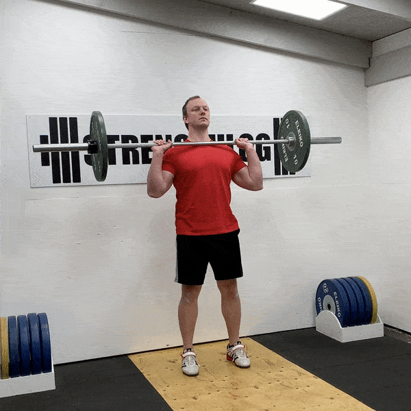

Ćwiczenia Mięśni Ramion
Wyciskanie sztangi nad głowę

1. Weź chwyt mniej więcej na szerokość ramion. Od łokcia do pięści (pionowe przedramiona) powinna być linia prosta.
2. Odciągnij brodę do tyłu i dociśnij ciężarek do sufitu, prostując staw łokciowy i zginając staw barkowy.
3. Naciskaj, aż łokcie będą wyprostowane i lekko wypchnij głowę do przodu.
4. Wróć do pozycji wyjściowej z kontrolą. Odciągnij brodę do tyłu, aby sztanga bezpiecznie przeszła obok twarzy.
Wyciskanie nad głowę hantli w pozycji siedzącej
1. Usiądź na ławce z oparciem. Podnieś hantle na wysokość ramion, trzymając dłonie do przodu.
2. Podnieś hantle do góry i zatrzymaj się w pozycji skurczonej.
3. Opuść ciężarki z powrotem do pozycji wyjściowej.
Machine Face Pulls
1. Stojąc przodem do wyciągu, pociągnij ciężarek do siebie, trzymając ramiona równolegle do podłoża.
2. Wyciągnij ręce do tyłu po obu stronach głowy i przytrzymaj tę pozycję.
3. Powoli powróć ciężar do pozycji wyjściowej. Powtórz.
Unoszenie hantli w bok

1. Stań prosto z hantlami po obu stronach, dłonie skierowane w stronę bioder.
2. Podnieś ramiona po obu stronach, lekko zginając łokcie, aż będą równoległe do podłogi. Zatrzymaj się w górnej części ruchu.
3. Powoli opuść ramiona do pozycji wyjściowej.
Cable Overhead Press
1. Użyj uchwytu z kablem umieszczonym na spodzie urządzenia. Stań prosto, pamiętając o utrzymaniu płaskich pleców. Twoja pozycja wyjściowa będzie miała dłonie skierowane do przodu.
2. Użyj łokci i ramion, aby nacisnąć ciężar bezpośrednio nad głową.